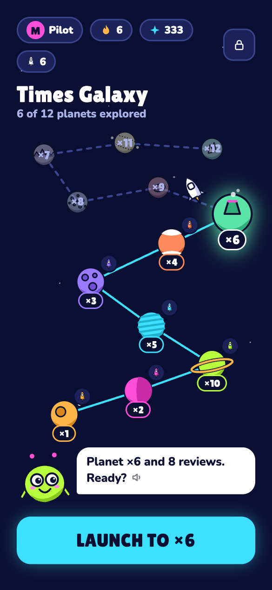
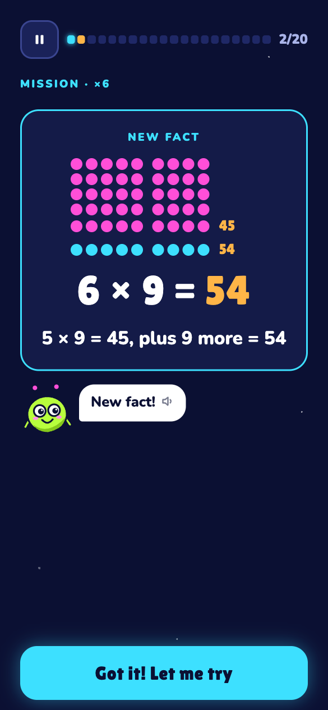
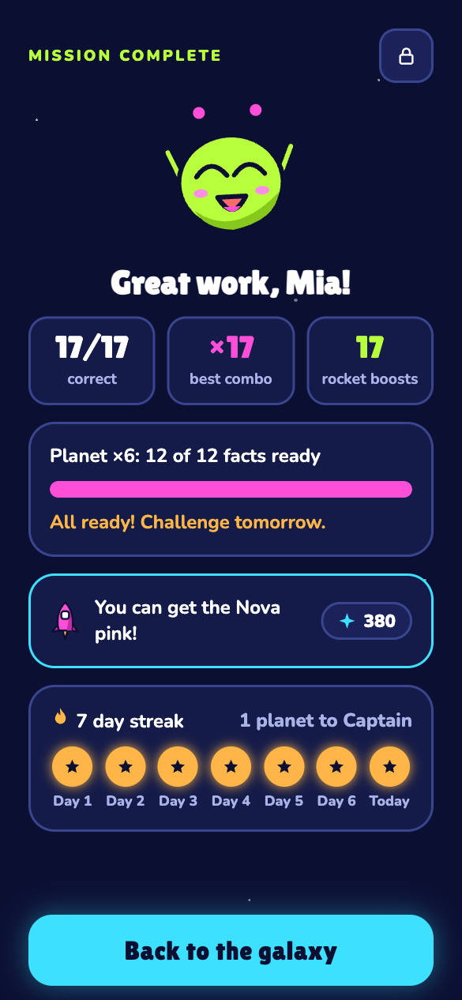

Master your times tables, 5 minutes a day
A free space game for children aged 8–9. Fly through 12 planets, one for each times table, until every multiplication fact is quick and sure.
iPad, Chromebook, phone or computer.
See the game



How it works
First flight
Zib, the alien co-pilot, asks two hard facts from each times table. The tables your child already knows light up at once and give their rockets.
One mission a day
About 20 questions, 2–5 minutes. New facts come with a picture and a trick. Mistakes come back a few questions later, and old facts come back on later days.
Planet challenge
When every fact of a planet is ready, the challenge comes the next day: the whole table once, with no timer. Pass it and the next planet opens.
Galaxy explored
All 12 planets, up to 12 × 12, and a certificate. After that, a short daily patrol keeps the facts fresh.
For parents
- No account, no ads, no email.
- Progress stays on this device. A save code in the grown-ups area is your backup.
- Works in the browser on iPad, Chromebook, phone and computer, and offline after the first visit.
- The grown-ups area (press and hold the lock) shows every fact: learned, mastered and the hard ones.
- Settings for 10 × 10 or 12 × 12, the speed goal, a relaxed mode with no speed goal, and Zib's voice.
For teachers
- Send the link home. Children practise for 5 minutes a day.
- No login, no class codes, no pupil data to manage.
- Every fact up to 12 × 12, both ways round (7 × 8 and 8 × 7), so it fits the Year 4 multiplication tables check in England.
- Facts are reviewed on later days, so practice turns into quick recall.
Questions
Is Times Galaxy free?
Yes. It is free to play, with no ads and no account.
Which ages is it for?
Mainly children aged 8–9 (Grade 3 in the US, Year 4 in the UK). It also works for Grade 2 as a first start, and for Grades 4–5 to fill gaps and get faster.
How long does it take each day?
About 5 minutes. There is one mission a day, about 20 questions, and an 8-question bonus on short days. Then Zib goes to sleep until tomorrow.
Where is my child's progress saved?
Only in this browser, on this device. In the grown-ups area you can copy a save code as a backup and load it on another device. On iPhone and iPad, add the game to the Home Screen so Safari keeps the progress.
Is my child's data safe?
Your child's name and answers stay on the device. There are no cookies, no ads and no account. Nothing your child types is sent anywhere. Details are on the privacy page.